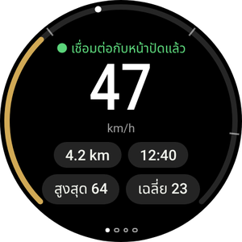
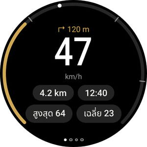
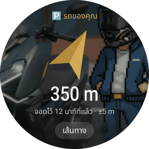
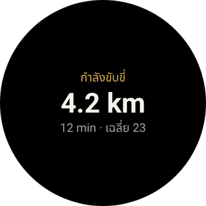
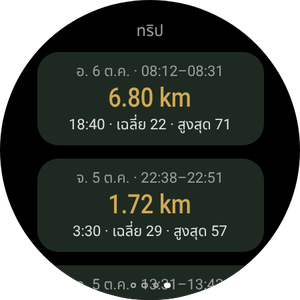
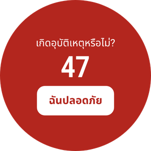
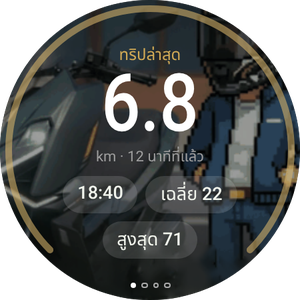
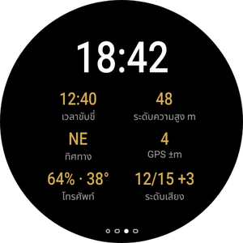

รถของคุณ บนข้อมือ
แอป Wear OS เป็นตัวเลือกเสริมและทำงานร่วมกับแอปมือถือ แสดงความเร็วและการเลี้ยวถัดไป สั่นก่อนเลี้ยวทุกครั้ง พาคุณกลับไปที่รถที่จอดไว้ และให้คุณควบคุม Android Auto บนหน้าปัดได้โดยไม่ต้องแตะมือถือ
ยังไม่มีแอปมือถือใช่ไหม เริ่มจากคู่มือมือถือ

สิ่งที่คุณจะเห็นบนนาฬิกา






- นาฬิกาที่ใช้ Wear OS 3 ขึ้นไป: Galaxy Watch ตั้งแต่รุ่น 4, Pixel Watch และอื่นๆ นาฬิกา Huawei, Amazfit และ Garmin ไม่ได้ใช้ Wear OS จึงใช้ไม่ได้
- นาฬิกาจับคู่กับมือถือแล้ว และติดตั้ง RideScreen AA 2.2 ขึ้นไป บนมือถือแล้ว
- มือถือและนาฬิกาอยู่ในเครือข่าย Wi‑Fi เดียวกัน (เช่น Wi‑Fi ที่บ้าน) จำเป็นเฉพาะการติดตั้งครั้งนี้
- ประมาณ 10–15 นาที ทำแค่ครั้งเดียว: เวอร์ชันต่อไปติดตั้งจากมือถือ
ติดตั้งแอปบนนาฬิกา
นาฬิกาเปิดไฟล์ APK แบบมือถือไม่ได้ ครั้งแรกนี้จึงต้องติดตั้งผ่านแอปบนมือถือที่คุยกับนาฬิกาผ่าน Wi‑Fi (การแก้ไขข้อบกพร่องแบบไร้สาย) ฟังดูยาก แต่แค่แตะไม่กี่ครั้ง
-
ดาวน์โหลด APK ของนาฬิกาบนมือถือ
แตะปุ่มเพื่อดาวน์โหลด APK ของนาฬิกาโดยตรง (ไฟล์ที่ลงท้ายด้วย WearOS-reloj.apk) เก็บไว้ในโฟลเดอร์ดาวน์โหลด
ติดตั้งแอปจาก Play Store แอปใดแอปหนึ่งนี้บนมือถือด้วย: Wear Installer 2 หรือ Bugjaeger
ดาวน์โหลด APK ของนาฬิกา -
เปิดตัวเลือกสำหรับนักพัฒนาแอปของนาฬิกา
Galaxy Watch: การตั้งค่า → เกี่ยวกับนาฬิกา → ข้อมูลซอฟต์แวร์ → แตะ เวอร์ชันซอฟต์แวร์ 5 ครั้ง
Pixel Watch และรุ่นอื่น: การตั้งค่า → ระบบ → เกี่ยวกับ → แตะ หมายเลขบิลด์ 7 ครั้ง
จะมีข้อความแจ้งว่าเปิดตัวเลือกสำหรับนักพัฒนาแอปแล้ว
-
เชื่อมต่อนาฬิกากับ Wi‑Fi
การตั้งค่า → การเชื่อมต่อ → Wi‑Fi: ตั้งเป็น เปิด (ไม่ใช่อัตโนมัติ) และเชื่อมต่อเครือข่ายเดียวกับมือถือ
ถ้าภายหลังนาฬิกาไม่แสดงที่อยู่ IP ให้ปิด Bluetooth ของมือถือสักครู่: นาฬิกาจะใช้ Wi‑Fi ก็ต่อเมื่อเชื่อมต่อมือถือผ่าน Bluetooth ไม่ได้ -
เปิดการแก้ไขข้อบกพร่องแบบไร้สาย
การตั้งค่า → ตัวเลือกสำหรับนักพัฒนาแอป → เปิด การแก้ไขข้อบกพร่อง ADB และ การแก้ไขข้อบกพร่องแบบไร้สาย เปิดการแก้ไขข้อบกพร่องแบบไร้สาย → จับคู่อุปกรณ์ใหม่
นาฬิกาจะแสดงรหัส 6 หลัก และที่อยู่พร้อมพอร์ต เช่น 192.168.1.40:37115
ตั้งเวลาปิดหน้าจอนาฬิกาให้นานขึ้นก่อน ถ้าหน้าจอดับระหว่างจับคู่ รหัสจะหมดอายุ -
จับคู่และติดตั้งจากมือถือ
เปิด Wear Installer 2 (หรือ Bugjaeger) ใส่ที่อยู่และรหัสจับคู่ แล้วเชื่อมต่อด้วยที่อยู่ที่แสดงในหน้าการแก้ไขข้อบกพร่องแบบไร้สาย
เลือกไฟล์ …-WearOS-reloj.apk จากโฟลเดอร์ดาวน์โหลดแล้วติดตั้ง ภายในหนึ่งนาที RideScreen AA จะขึ้นบนนาฬิกา
พอร์ตสำหรับจับคู่กับพอร์ตสำหรับเชื่อมต่อไม่ใช่พอร์ตเดียวกัน เป็นข้อผิดพลาดที่พบบ่อยที่สุด -
เปิดแอปแล้วปิดการแก้ไขข้อบกพร่อง
เปิด RideScreen AA บนนาฬิกา แล้วอนุญาตตำแหน่ง (สำหรับเข็มทิศชี้ไปที่รถ) และการแจ้งเตือน
ตอนนี้ปิดการแก้ไขข้อบกพร่องแบบไร้สายและ ADB ได้แล้ว: ไม่จำเป็นต่อการใช้งานหรืออัปเดต

ควบคุม Android Auto จากนาฬิกา
หน้าปัด Zontes ไม่ใช่จอสัมผัส นาฬิกาจะช่วยคุณควบคุม Android Auto เหมือนปุ่มหมุนในรถยนต์: วงล้อสำหรับเลื่อนไปบนหน้าจอ และปุ่มสำหรับเลือก ย้อนกลับ หรือคุยกับ Assistant
ปุ่มทิศทาง (ปัดไปหน้าที่สอง)
- ▲ ▼แตะ: หมุนวงล้อของ Android Auto ทีละรายการ กดค้าง: ลูกศรขึ้นหรือลง
- ◀ ▶ลูกศรซ้ายและขวา: เปลี่ยนคอลัมน์หรือแท็บ
- OKเลือกรายการที่ไฮไลต์
- ↩ย้อนกลับ
- ⌂หน้าหลักของ Android Auto
- 🎤Google Assistant ("พาฉันไป…", "เปิดเพลง")
- 📊กลับไปที่ข้อมูลการเดินทาง
แบบมีขอบหมุนหรือเม็ดมะยม
Galaxy Watch Classic, Pixel Watch และนาฬิกาที่มีเม็ดมะยมหมุนได้
- หมุนขอบหรือเม็ดมะยมเพื่อเลื่อนไปใน Android Auto เหมือนปุ่มหมุนในรถยนต์ ใช้ได้ทุกหน้าของนาฬิกา
- กด OK บนปุ่มทิศทางเพื่อเลือก
- ในหน้า การเดินทาง ขอบหมุนจะเลื่อนรายการแทนการเลื่อน Android Auto
แบบไม่มีขอบหมุน
Galaxy Watch รุ่นปกติ (4, 5, 6, 7…) และนาฬิกาหน้าจอเรียบ
- ปุ่ม ▲ ▼ บนปุ่มทิศทางทำหน้าที่เป็นวงล้อ: แตะหนึ่งครั้ง ขยับหนึ่งช่อง
- กดค้างไว้เมื่อต้องการลูกศรจริง เช่น เพื่อเลื่อนขึ้นในรายการ
- ใน Galaxy Watch ที่มีขอบสัมผัส ให้เปิดในการตั้งค่านาฬิกา แล้วลากนิ้วรอบขอบจอเหมือนหมุนขอบ
หน้าต่างๆ ของแอป
ปัดซ้ายและขวา จุดด้านล่างบอกว่าคุณอยู่หน้าไหน

การสั่นเตือนเมื่อเลี้ยว
เมื่อนำทางด้วย Android Auto นาฬิกาจะสั่นก่อนการเลี้ยวแต่ละครั้ง: 2 ครั้งสำหรับซ้าย 3 ครั้งสำหรับขวา ยาวหนึ่งครั้งและสั้น N ครั้งสำหรับทางออกที่ N ของวงเวียน และยาวสองครั้งสำหรับกลับรถ
เปิดในแอปมือถือ: ⚙️ การตั้งค่า → คุณสมบัติเพิ่มเติมสำหรับการขับขี่ → การสั่นเตือนเมื่อเลี้ยวที่นาฬิกา เป็นฟีเจอร์ทดลอง
ไทล์และคอมพลิเคชัน
เพิ่มไทล์ ขับขี่ (ปัดจากหน้าปัดนาฬิกาแล้วแตะ +) เพื่อดูการเดินทางปัจจุบันหรือจุดที่จอดรถ คอมพลิเคชัน RideScreen · km จะแสดงระยะทางบนหน้าปัดนาฬิกา
อัปเดตนาฬิกา
-
จากมือถือ ไม่ต้องใช้คอมพิวเตอร์
ตั้งแต่เวอร์ชัน 2.2 เมื่อมีเวอร์ชันใหม่: บนมือถือ ❓ ช่วยเหลือ → ⌚ อัปเดตแอปนาฬิกา → เวอร์ชันล่าสุด
มือถือจะดาวน์โหลดแอปนาฬิกาแล้วส่งผ่าน Bluetooth ใช้เวลาสองสามนาที: ดูความคืบหน้าได้ทั้งบนมือถือและนาฬิกา เมื่อเสร็จแล้วแตะ ติดตั้ง บนนาฬิกา
ครั้งแรก นาฬิกาจะขอให้คุณอนุญาตให้ RideScreen AA ติดตั้งแอป: เปิดใช้แล้วย้อนกลับ
ปัญหาที่พบบ่อย
นาฬิกาไม่แสดงที่อยู่ IPตอนเปิดการแก้ไขข้อบกพร่องแบบไร้สาย
- ตั้ง Wi‑Fi ของนาฬิกาเป็น เปิด ไม่ใช่อัตโนมัติ และเชื่อมต่อเครือข่ายเดียวกับมือถือ
- ปิด Bluetooth ของมือถือสักครู่เพื่อให้นาฬิกาเปลี่ยนไปใช้ Wi‑Fi เปิดกลับเมื่อเสร็จ
Wear Installer เชื่อมต่อไม่ได้ตอนจับคู่
- ใช้พอร์ตจาก จับคู่อุปกรณ์ใหม่ เพื่อจับคู่ และพอร์ตในหน้าหลักของการแก้ไขข้อบกพร่องแบบไร้สายเพื่อเชื่อมต่อ สองพอร์ตนี้ไม่เหมือนกัน
- ถ้ารหัสหมดอายุ แตะจับคู่อุปกรณ์ใหม่อีกครั้ง: จะได้รหัสใหม่
"แพ็กเกจดูเหมือนจะไม่ถูกต้อง"ตอนติดตั้ง
น่าจะเป็น APK ของมือถือ นาฬิกาต้องใช้ไฟล์ที่ลงท้ายด้วย WearOS-reloj.apk
นาฬิกาขึ้นว่า "ไม่มีข้อมูลจากโทรศัพท์"เมื่อติดตั้งแอปแล้ว
- เปิด RideScreen AA บนมือถืออย่างน้อยหนึ่งครั้ง และตรวจว่านาฬิกาเชื่อมต่อกับมือถืออยู่ (แอป Galaxy Wearable หรือ Pixel Watch)
- แอปมือถือและแอปนาฬิกาต้องมาจากหน้าดาวน์โหลดเดียวกัน: ใช้กับเวอร์ชันใน Play Store หรือ OpenCfMoto ต้นฉบับไม่ได้
"⚠️ เริ่มเซิร์ฟเวอร์หน่วยหลักของ AA"ในหน้าการขับขี่
เซิร์ฟเวอร์ชุดเครื่องเสียงของ Android Auto บนมือถือปิดอยู่ ใน Android Auto: ⋮ → เริ่มเซิร์ฟเวอร์ชุดเครื่องเสียง (ขั้นตอนที่ 6 ของคู่มือมือถือ)
"นาฬิกานี้ไม่อนุญาตให้แอปติดตั้งอัปเดต"ตอนอัปเดตจากมือถือ
นาฬิกาของคุณไม่อนุญาตให้แอปหนึ่งติดตั้งแอปอื่น ติดตั้งเวอร์ชันใหม่เหมือนครั้งแรก (ส่วนที่ 1)
ไม่ใช่ทั้งหมดข้างต้นวิธีขอความช่วยเหลือ
บนมือถือแตะ ❓ ช่วยเหลือ → แชร์บันทึก แล้วส่งเข้ากลุ่มพร้อมรุ่นนาฬิกาและมือถือ
RideScreen AA ฟรีและเป็นโอเพนซอร์ส พัฒนาต่อจาก OpenCfMoto ของ Alexandru (zanderp) ไม่ใช่แอปทางการของ Zontes หรือ Google หน้าจอเป็นเพียงตัวอย่าง ชื่อการตั้งค่าจริงบนนาฬิกาของคุณอาจต่างไป · คู่มือมือถือ